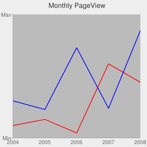
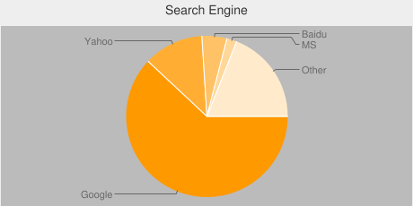
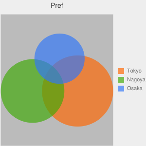

背景及びグラフエリア(塗りつぶし)
広告
グラフはグラフが表示されるグラフエリアと、グラフエリアに加えてタイトルや軸ラベルなどが含まれるグラフの背景があります。ここからはグラフの背景及びグラフエリアの色の指定方法を確認します。適用可能なグラフは次の通りです。
Line chart(折れ線グラフ) Bar chart(棒グラフ) Pie chart(円グラフ) Venn diagram(ベン図) Scatter plot(散布図)
背景やグラフエリアの色の指定方法は3つあります。指定の色で塗りつぶす方法、グラデーションで塗りつぶす方法、ストライプで塗りつぶす方法、です。まずは指定の色で塗りつぶす方法を確認します。
書式は次の通りです。
chf=<対象>,s,<色>|<対象>,s,<色>
パラメータ名「chf」に対して「対象」「s」「色」の順で指定します。対象には背景かグラフエリアかを指定し、背景の場合には「bg」をグラフエリアの場合には「c」を指定します。背景とグラフエリアのどちらかだけでも指定できますが、両方指定する場合はパイプ(|)で区切り続けて記述します。例えば次のように記述します。
chf=bg,s,ff0000|c,s,0000ff
※今回は指定の色で塗りつぶす方法を使っていますが、背景とグラフエリアで別々の色の指定方法が選択できます。
サンプルプログラム
では実際にサンプルを試してみます。

http://chart.apis.google.com/chart? chs=300x300 &chd=t:10,15,4,60,45|30,23,73,24,87 &cht=lc &chco=ff0000,0000ff &chtt=Monthly+PageView &chxt=x,y &chxl=0:|2004|2005|2006|2007|2008|1:|Min|Max &chf=bg,s,eeeeee|c,s,bbbbbb
円グラフの場合はグラフエリアは決まっていないようです。

http://chart.apis.google.com/chart? chs=460x230 &chd=t:62,12,5,2,19 &cht=p &chtt=Search+Engine &chl=Google|Yahoo|Baidu|MS|Other &chf=bg,s,eeeeee|c,s,bbbbbb
ベン図の場合は背景とグラフエリアが区分されています。

http://chart.apis.google.com/chart? chs=300x300 &chd=t:100,80,50,20,20,10,5 &cht=v &chtt=Pref &chdl=Tokyo|Nagoya|Osaka &chf=bg,s,eeeeee|c,s,bbbbbb
( Written by Tatsuo Ikura )
Profile

著者 / TATSUO IKURA
初心者～中級者の方を対象としたプログラミング方法や開発環境の構築の解説を行うサイトの運営を行っています。